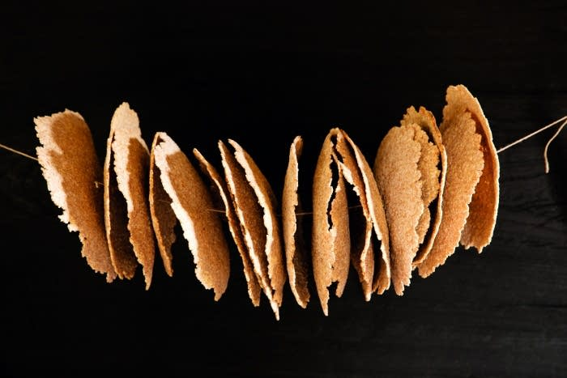

Birch bark Flatbread
The history of flatbread can be traced back to the Viking Age, a time of great conquest and adventure. This simple bread is made from a mixture of rye flour, water, salt, and sometimes yeast or sourdough starter, which is then rolled out thin and baked at a temperature to rival the forge of mjollinir. I recall how our warriors needed food that could withstand the rigors of long journeys and expeditions. The dry and hard texture of the bread made it ideal for storage and transportation.
As time passed, it became a staple source of sustanance, often served with butter, cheese, or other toppings as a snack or part of a meal. But as a god of wisdom and knowledge, I am here to report there are now variations that incorporate new ingredients. Such as this recipe which includes birch bark, borrowed from the Sami people of northern Lapland, which adds additional nutritional value to the bread. It is satisfying to see how this ancient bread has evolved and adapted over time, while still maintaining its importance in everyday cuisine.
Ingredients
- 1 cup of birch bark flour (can substitute with rolled oats)
- 4 ¼ cups rye flour
- 1 ½ teaspoons kosher salt, plus more salted cultured butter, melted
Directions
- In a large bowl, whisk together the oats, flour, and salt. Add enough water to bring together into a dough.
- Knead until smooth.
- Divide dough into 3 portions and flatten each portion into a paper-thin circle using a kruskavel.
- Cut out a circle in the middle of the bread so there is a hole
- Brush each flatbread with butter and sprinkle with a little salt.
- Heat the oven to 425.
- Bake on a greased baking pan for about 10 minutes.
Recipe Credit: Ancient Recipes with Sohla
Photo Credit: The Splendid Table